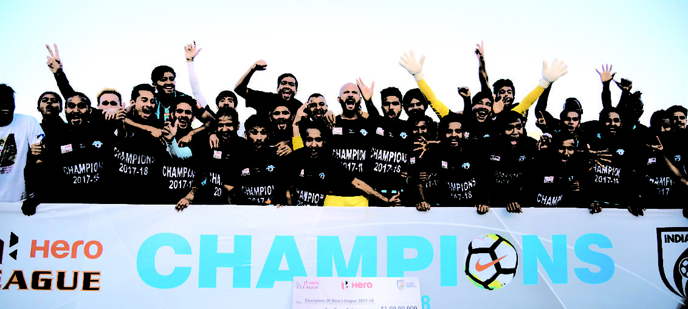

Posted at Date: April 06, 2019
Credit : রাইট স্পোর্টস ওয়েব ডেস্ক
অন্তর্ঘাত, চক্রান্ত, অশুভ আঁতাতের অভিযোগ,
মিনার্ভা বন্ধের দাবি বাজাজের

মিনার্ভা পাঞ্জাব এফসি-র বিরুদ্ধে চক্রান্ত ও অন্তর্ঘাতের অভিযোগ তুললেন রনজিৎ বাজাজ। সঙ্গে দাবি, সর্বভারতীয় ফুটবল ফেডারেশন এবং এফএসডিএল-এর অশুভ আঁতাতের কারণে বন্ধ করে দিতে বাধ্য হচ্ছেন ক্লাব। শুক্রবার দুপুরে টুইটারে প্রথম টুইটেই লিখেছিলেন মিনার্ভা-মালিক, ‘অত্যন্ত দুঃখের সঙ্গে জানাচ্ছি যে, মিনার্ভা পাঞ্জাব এফসি-ও সেই পথেই হাঁটতে বাধ্য হচ্ছে যে পথে আগেই হেঁটেছে বহু ক্লাব। সিনিয়র, অনূর্ধ্ব১৩, অনূর্ধ্ব১৫, অনূর্ধ্ব১৮ মিলিয়ে গত চার বছরে জাতীয় স্তরে ৬ খেতাবজয়ী এবং বিভিন্ন বয়সভিত্তিক ভারতের জাতীয় ফুটবল দলে ৬০-এর বেশি ফুটবলার সরবরাহকারী ক্লাব বন্ধ করে দেওয়া হচ্ছে।
কেন এই সিদ্ধান্ত?
শুক্রবার (৫ এপ্রিল) তাঁকে জানানো হয়েছিল, এএফসি কাপে খেলার জন্য তিনি যে কলিঙ্গ স্টেডিয়াম ‘বুক’ করে রেখেছিলেন আগেই, তাঁকে বা তাঁর ক্লাবকে খেলার জন্য দিতে পারবে না ওডিশা। সরকারি সিদ্ধান্তের কারণ হিসাবে বলা হয়েছে, আগামী বছর (২০২০) ভারত যেহেতু অনূর্ধ্ব১৭ মহিলা বিশ্বকাপের আয়োজক দেশ এবং ভুবনেশ্বর অন্যতম আয়োজক-শহর, স্টেডিয়ামের পুনর্নিমাণের জন্য সুপার কাপ ফাইনালের পর (১৪ এপ্রিল) স্টেডিয়ামে সব ধরনের খেলা বন্ধ থাকবে। বাজাজ যেন এএফসি কাপের খেলার জন্য অন্য কোনও স্টেডিয়াম বেছে নেন ‘ঘরের মাঠ’ হিসাবে। এএফসি-তে মিনার্ভার খেলা রয়েছে তিনটি। আগামী ১ মে (বনাম মানাং মারসিয়াংদি, নেপাল), ১৯ জুন (চেন্নাইয়িন এফসি, ভারত) এবং ২৬ জুন (ঢাকা আবাহনী, বাংলাদেশ)। এশীয় ফুটবল কনফেডারেশনের কাছে গতবারের (২০১৭-২৮) আই লিগ চ্যাম্পিয়ন মিনার্ভা আগেই জানিয়ে দিয়েছিল, ‘হোম ম্যাচ’ খেলবে কলিঙ্গ স্টেডিয়ামে। কর্তৃপক্ষের সঙ্গে কথা বলে, নিজেদের তিনটি খেলার জন্য স্টেডিয়াম সংক্রান্ত চুক্তি করার পরই। সেই ঘোষণার পর খেলার যখন আর একমাসও বাকি নেই, যদি ঘরের মাঠ বদলাতে হয়, বিরাট জরিমানা ধার্য করবে এএফসি। মিনার্ভা-মালিকের সাফ ঘোষণা, সেই টাকার সংস্থান করতে অসমর্থ তাঁরা। তাই, দল তুলে দেওয়া ছাড়া উপায়ান্তর নেই।
চক্রান্ত, অভিযোগ কেন?
তুলে ধরা যাক মিনার্ভা-মালিকের পরপর টুইটগুলো –
এক) ৬০ কোটি টাকার মানহানির মামলা এবং আমাদের এএফসি কাপের খেলা সংক্রান্ত অনুমতি প্রত্যাহার, মেয়েদের অনূর্ধ্ব১৭ বিশ্বকাপে কলিঙ্গ স্টেডিয়াম পুনর্নির্মাণের অজুহাতে, পরিষ্কার বুঝিয়ে দিচ্ছে, এআইএফএফ এবং এফএসডিএল অশুভ আঁতাতের কথা প্রকাশ্যে আনার জন্য আমাকে দমিয়ে দেওয়ার চেষ্টা হচ্ছে।
দুই) আমার স্ত্রী এবং আমি সারা জীবন ভারতীয় ফুটবলের উন্নতির জন্য উৎসর্গ করব, এমন ভেবেই কাজ করছিলাম, করে যেতে চেয়েও ছিলাম আজীবন। কিন্তু এভাবে লড়াই চালানো অসম্ভব হয়ে উঠছে সর্বগ্রাসী ফেডারেশন এবং তাঁদের অনুগত সংস্থাদের সম্মিলিত প্রচেষ্টার বিরুদ্ধে, আমাদের জীবন নরক করে তুলছে যাঁরা।
তিন) মিনার্ভা পাঞ্জাব এফসি এবং অন্য সব ক্লাব যারা আপনাদের জন্য ক্লাব তুলে দিতে বাধ্য হয়েছে তাদের সবার পক্ষ থেকে এআইএফএফ এবং এফএসডিএল-রিলায়েন্সকে অভিনন্দন, এমন দুর্দান্ত কাজের জন্য!
চার) অত্যন্ত দুঃখের সঙ্গে বলতে বাধ্য হচ্ছি যে, ভারতে ফুটবলের জন্য প্রসারের কাজে যুক্ত থাকার বদলে এআইএফএফ এবং এফএসডিএল রিলায়েন্স জুটি চেষ্টা করছে এমন সব ধরনের ফুটবলকে শেষ করে দিতে যে-ফুটবলের (প্রতিযোগিতা) মালিকানা তাঁদের নয়। ওডিশা সরকারকে দিয়ে আমাদের স্টেডিয়াম বুকিং বাতিল করে দেওয়ার মধ্য দিয়ে যা ফুটে উঠেছে লজ্জাজনকভাবে।
পাঁচ) আই লিগে চ্যাম্পিয়ন হওয়ার পর এএফসি কাপে খেলাটা ছিল আমাদের অর্জিত অধিকার। কিন্তু, জানতে পারলাম এআইএফএফ এবং এফএসডিএল, আমাদের সেই অনুমতি বাতিল করে দিয়েছে। ওডিশা ক্রীড়া দফতরে টেলিফোন করলে তাঁরা পরিষ্কার বলে দিচ্ছেন, এআইএফএফ এবং এফএসডিএল-এর সঙ্গে কথা বলতে। অবাক হয়ে যাচ্ছি ভেবে যে, আমাদের দেশের ফুটবল পরিচালন সংস্থাই আমাদের এএফসি-তে খেলা আটকাতে অন্তর্ঘাতে সামিল!
ছয়) এখন অনেক দেরি হয়ে গিয়েছে। স্থান বা স্টেডিয়াম পাল্টানো অসম্ভব। আমাদের বাতিল করে দেবে এএফসি। অথচ, সব অনুমতি নেওয়া ছিল, যথেষ্ট আগেই। ওডিশার মুখ্যমন্ত্রী প্লিজ এগিয়ে আসুন, আমাদের দিকে সাহায্যের হাত বাড়িয়ে।
সাত) জোড়হাতে অনুরোধ করছি, ওডিশার মুখ্যমন্ত্রী নবীন পট্টনায়ক এবং মুখ্যমন্ত্রীর দফতরের সবাইকে, আপনারা এএফসি-তে বাতিল হয়ে যাওয়ার হাত থেকে প্লিজ আমাদের বাঁচান।
ক্লাব কি বন্ধ?
দিও নিজেই লিখেছিলেন, ক্লাব তুলে দিতে বাধ্য হচ্ছেন, পরের দিকের টুইটগুলো থেকে পরিষ্কার, তিনি চাইছেন, যেন তাঁদের খেলার অনুমতি প্রত্যাহার করে না-নেওয়া হয়। বলেওছেন একটি ওয়েবসাইটকে যে, ‘আমরা খেলা বন্ধ করতে চাই না। খেলতেই চাই। আমাদের ফুটবলাররাও অনুশীলন করছে নিয়মিত। কিন্তু, এই মুহূর্তে অন্যত্র যেহেতু খেলা আয়োজনের ব্যবস্থা নেওয়া সম্ভব নয়, যদি ওডিশায় খেলা না হয়, ক্লাব বন্ধ করে দেওয়া ছাড়া আমাদের হাতে আর কোনও উপায় থাকবে না।’ কয়েকদিন আগেই সুপার কাপ বয়কট নিয়ে তিনি একটি ওয়েবসাইটকে দেওয়া সাক্ষাৎকারে কেরালা ব্লাস্টার্স এফ সি (আইএসএল-এর একটি ফ্র্যাঞ্চাইজি) তাদের ফুটবলারদের মাইনে ঠিকঠাক দিচ্ছে না, এমন বলেছিলেন বলে, ৬০ কোটি টাকার মানহানির মামলা করেছে কেরালা ব্লাস্টার্স। সেই মামলার পেছনেও এআইএফএফ এবং এফএসডিএল-এর প্ররোচনা আছে, অভিযোগ জানাতে দ্বিধাহীন বাজাজ! সব দিক থেকেই তাঁকে কোণঠাসা করার চেষ্টা করে চলেছে এআইএফএফ এবং এফএসডিএল-এর অশুভ আঁতাত। বরাবরই তাঁদের বিরুদ্ধে টুইটারে সরব হয়েছেন বাজাজ। সুপার কাপ বয়কটের যে-সিদ্ধান্ত নেওয়া হয়েছিল আই লিগের ক্লাবগুলোর জোটের তরফে, তার পেছনেও বাজাজের মস্তিষ্ক, ধরে নিয়েই এআইএফএফ এবং এফএসডিএল-এর তরফে তাঁকে নানা দিক থেকে আঘাতের চেষ্টা করা হচ্ছে, যাতে তিনি মুখ বন্ধ রাখতে বাধ্য হন। কিন্তু, বাজাজ পরিষ্কার জানিয়েছেন বারবার, প্রয়োজনে ক্লাব বন্ধ করে দিতে হলে দেবেন, এই অশুভ আঁতাতের বিরুদ্ধে মুখ খুলবেনই। এএফসি কাপে খেলতে না পারলে, ক্রীড়াক্ষেত্রের সর্বোচ্চ আদালত, কোর্ট অব আরবিট্রেশন (সিএএস) এবং ফুটবলারদের পা থেকে ফুটবল কেড়ে নেওয়ার এই অশুভ আঁতাতের বিরুদ্ধে ফিফায় যাওয়ার রাস্তা অবশ্য খোলাই থাকছে বাজাজের কাছে। ডেম্পো, সালগাওকার, স্পোর্টিং, মাহিন্দ্রা, জেসিটি-র মতো ক্লাব উঠে গিয়েছে এআইএফএফ-এর এই প্রশাসকদের আমলেই। তাই, আরও একটি ক্লাব বন্ধ হলেই বা, মাথাব্যথা কেন ফেডারেশনের?
Top Stories

Calcutta Sports Journalists' Club requests the pleasure of your company at its annual awards functionMore...

Jasprit Bumrah has been declared fit and he will now be available for selection for India's third Test against England at Trent Bridge. More...

Ronaldo has increased Juventus' standing among Europe's elite. More...